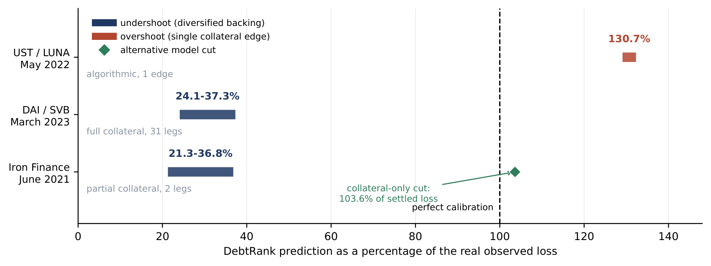
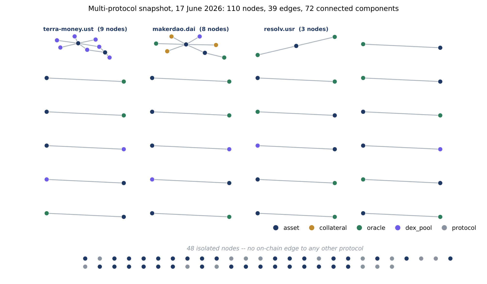

MakerDAO — DAI
Survived the March 2020 liquidation cascade and the March 2023 SVB contagion. During SVB the push oracle floored at $0.88 while the market traded to $0.810 — a 697bp gap invisible to a single-oracle circuit breaker.
Research Portfolio — Alexandre Lemière
Twenty audited data pipelines and technical reports covering every major DeFi peg-design family, applying econometrics, machine learning, reinforcement learning and graph theory to one question: how, and why, do synthetic assets lose their peg — and what does that imply for designing one that doesn't.
“The 25-delta skew leads BTC/ETH stress by 3–4 days” was the exciting early result. An adversarial second audit found the lead-time statistic was bounded by construction — even the random baseline reports a 4.0-day lead — and a circular-shift permutation test failed to reject no anticipation (p = 0.186 BTC, 0.098 ETH). The claim was retracted.


Survived the March 2020 liquidation cascade and the March 2023 SVB contagion. During SVB the push oracle floored at $0.88 while the market traded to $0.810 — a 697bp gap invisible to a single-oracle circuit breaker.
Structurally premium-biased peg; the $1 redemption floor binds hard, with redemption intensity 7–8× higher below par than above.
PegKeeper-defended, slightly sub-peg by design. Egorov's insulation architecture holds up empirically: stress routes into the LLAMMA soft-liquidation mechanism, not into the peg itself.
Full forensic reconstruction of the June 2021 collapse: TITAN's supply inflated ~335,000× in ~24 hours. Only 1 of 8 pre-registered early-warning signals carried real information.
The survivor half of the Iron Finance comparison: near-identical contract logic, but FRAX raised its collateral ratio +8pp under stress while Iron let it fall −25.7pp — and only one protocol is still alive.
Tracking error is the wrong lens here — price is a deterministic clamped formula. The real story: 1,161 clamp episodes and a 2020–2021 freeze cascade (29 events) as the bull run pinned every inverse synth to its floor.
Reference stablecoin; full forensic reconstruction of the March 2023 SVB depeg, used as the calibration case for the whole corpus.
Peg fidelity is high in the center but sharply heavy-tailed. The real-time stress signal is the Curve 3pool weight imbalance, not the (opaque, off-chain-backed) oracle.
Reconstructed through the June 2022 Celsius/3AC contagion; the withdrawal queue's latency is priced — each extra day of queue costs −1.28bp of discount.
A NAV-tracking, perpetuals-linked liquidity index. Trading fees couldn't offset basket drawdown; GMX V1 wound down −99.8%.
Physically-backed tokenized equities track ~9× tighter than the now-dead synthetic equivalent (0.66% vs 5.8% RMSE) — and survived where the synthetic died at a 2021 freeze event.
The 25-delta BTC/ETH skew carries statistically significant incremental information about stress beyond a DVOL-style index — but an initial claim that it anticipates stress days in advance was retracted after an adversarial self-audit found it was an artifact of a bounded search window.